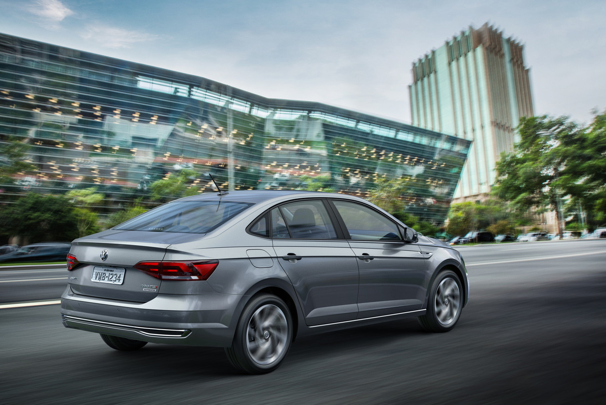

| Autos | Ubica tu consecionaria | Contacto |
|---|
Un reto al que se enfrentan los sedanes derivados de un hatchback y desarrollados específicamente para alguna región del planeta es el diseño. Por décadas hemos tenido con nosotros sedanes de diseños genéricos que por X o Y no terminan de adaptarse al lenguaje de diseño global de la marca.
